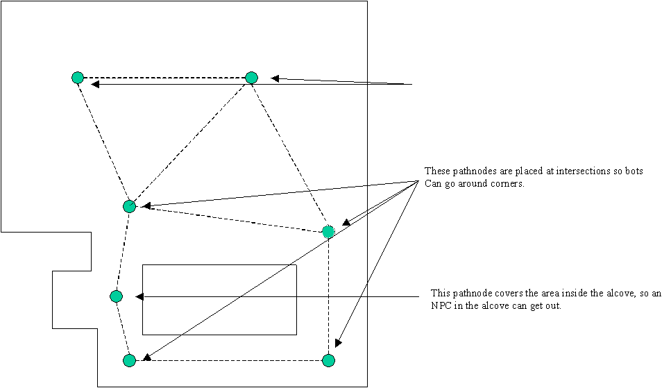

UDN
Search public documentation:
UsingWaypointsCH
English Translation
日本語訳
한국어
Interested in the Unreal Engine?
Visit the Unreal Technology site.
Looking for jobs and company info?
Check out the Epic games site.
Questions about support via UDN?
Contact the UDN Staff
日本語訳
한국어
Interested in the Unreal Engine?
Visit the Unreal Technology site.
Looking for jobs and company info?
Check out the Epic games site.
Questions about support via UDN?
Contact the UDN Staff
Using Waypoints(使用路径节点)
概述
基本路径
PathNodes(路径节点) ( NavigationPoint 的子类)。==PlayerStarts== 也是 NavigationPoints(导航节点) ，并且它们执行同样的导航功能。另外， 当构建路径时， InventorySpots 将会被自动地放置在关卡中每次拾取它们的位置(它们是不可见的，但是您可以看到到它们的连接路径)。
对于要连接的 PathNodes(路径节点) 来说，它们之间的距离必须小于 1200 个虚幻单位(程序员可以修改 nPath.h 文件中的 MAXPATHDIST 来改变这个值)。两个 NavigationPoints(导航节点) 距离太近(重叠)可能会导致AI导航问题，并且应该避免这个问题。当放置 PathNodes(路径节点) 时，目的是确保关卡的每个区域都会被 PathNode(路径节点) 或其它的 NavigationPoint(导航节点) 所覆盖。当一个区域被覆盖后，NPC可以畅通无阻地走到 PathNode 间距离小于1200个单位的路径节点(也就是说不会在任何东西旁步行停止)。

构建路径
PathNodes(路径节点) 后，关卡设计人员可以通过从 Build(构建) 菜单中选择 AI 路径 (或通过从 Build(构建) 菜单中选择 Rebuild All(重新构建所有) 来进行完全地重新编译)来构建 NavigationPoints(导航节点) 之间的连接。对于被构建的路径的角色尺寸大小的范围由用于构建路径的Scout类的PathSizes数组决定。(PathSizes数组定义在您的Engine.ini文件的[Engine.Engine]部分的ScoutClassName ini入口处)。
一旦关卡中具有了大量的路径，那么重新编译所有路径时可能会花费很多的时间。要想调整路径的放置位置，请使用 Build Options(构建选项) 中的 Build Changed Paths(构建更改的路径) 按钮。这将会仅重新构建那些已经被添加、删除或移动的 NavigationPoints(导航节点) 间的路径。但是，在保存和播放关卡前，将会要求重新构建所有路径。
查看构建的路径
一旦已经构建了路径，便可以通过使用 Show Paths(显示路径) 选项标志来在各种关卡视图窗口中查看它们，这个 Show Paths(显示路径) 选项标志可以在任何视口的 Toggle Show Flags(切换显示标志) 菜单处找到。 路径将会显示为从一个NavigationPoint(导航节点) 到另一个导航节点间的连线。如果NPCs在该路径的任何方向都能穿行，那么将会有两条线，同时有箭头物来指明每个方向。否则，线将会在可以穿行的路径方向上显示一个箭头。
尽管使用路径的NPCs是较小的，但是最好总是调整 PathNode 的位置来使得连接的路径变得尽可能地宽。NPCs将可以在路径中平滑地转换角落或者进行前后扫射，所以较大的路径将会产生比较自热的视觉移动效果。
路径颜色
一旦构建路径后，路径将会显示为各种各样的颜色，以便指出关于路径的重要信息。导航图边缘的默认的路径颜色的定义如下:- Orange(橘黄色) -飞行路径，窄路径
- Light Orange(浅橘黄色) -飞行路径，宽路径
- Light Purple(浅紫色) -需要跳高(高于正常的跳跃能力)
- Blue(蓝色) -窄路径
- Green(绿色) -正常路径
- White(白色) - 宽路径
- Pink(粉色) -非常宽的路径
- Yellow(黄色) -强制路径
- Purple(紫色) - 高级”路径(需要使用"智能")
- Red(红色) - “单向”路径(也就是从节点A->B之间有reachspec(到达说明，而在B->A之间却没有))。(注意:)
调试路径
-
Viewclass Pawn-查看有问题的AI NPC。 -
ShowDebug-查看哪个AI NPC正在思考，以及它将行走哪条路径。 -
RememberSpot-当在关卡中检查导航节点时标记一个位置。然后，使用ShowDebug(没有查看其它东西)将会为您不断地显示到那个标记位置的更新路径。
高级路径
Doors(门)
Door NavigationPoints 必须和任何作为门的 Mover (基于它的位置，它允许或组织两个区域间的运动)结合放置。==Door== 应该放置在影响区域的中心(一般，放置在用在作为门的实际静态网格物体的中心 – 但是位置要低到接触地面的程度)。还有几个 Door(门) NavigationPoint(导航节点) 的重要属性应该根据需要进行更新。
- DoorTag(门标签) 和
Door(门)相关联的Mover的标签。 - DoorTrigger(门触发器) -如果触发了
Door(门)，将会有一个触发器actor的标签用于打开Door(门)。 - bInitiallyClosed(初始关闭) -
Mover的默认状态是否允许运动(如果值为 false )，或者阻止运动(如果值为 true ，它是默认值)。 - bBlockedWhenClosed -如果关闭了
Mover，NPC将不会有办法打开它(默认为 false )。
Movers 具有 bAutoDoor(自动门) 属性。如果设置为真，将会为那个 Mover 自动地产生 Door(门) PathNode(路径节点) 。这将会对大多数的 Door(门) 有效。
JumpPads(跳板)
JumpPads(跳板) 可以把任何接触它们的 Pawn 按照特定的方向弹回去。==JumpPads(跳板)== 是通过在 JumpPad(跳板) 的数组属性 ForcedPaths[] 中的第一个元素中指定一个目的地 PathNode(路径节点) 来实现的。当重新构建路径时将会自动地计算正确的跳跃速度。如果由于任何的原因导致自动产生的速度出现问题，可以设置 JumpPads(跳板) 的 JumpModifier 向量的属性。
JumpDests(跳跃目的地)
如果任何地方太高以至于不能跳上去时，则应该使用JumpDests(跳跃目的地) 而不是使用 PathNodes(路径节点) 。==JumpSpots== 将会被低重力的NPCs或者那些有某种跳跃推力的NPCs使用。Bot跳跃到 JumpSpot 的路径应该把这个 JumpSpot 放置到它的其中一个 ForcedPath[] 数组属性元素内。
Lifts(电梯)
用作为lift的Mover 永远都不能使用 BumpOpenTimed 状态(而是使用 StandOpenTimed 状态)。用作为 Lifts 的 Movers 有两种和它们相关的 NavigationPoints(导航节点) 。==LiftCenter== 应该放在lift的中心。==LiftExit== 应该放置在 Lift(电梯) 的每个出口处(但是要足够的原，以便NPC站在那里时不会妨碍 Lift(电梯) )。==LiftCenter== 和 LiftExits 都有一个 LiftTag 属性，它们必须设置为 Mover 的标签。另外，如果触发了电梯，则要把触发的actor的标签放到 LiftCenter 的 LiftTrigger 属性中。==LiftExits== 还有一个可选属性 SuggestedKeyFrame ，当使用 LiftExit 时，它可以被设置为mover的关键帧数量。这可能会在某种情况下改善NPCs的导航。
Ladders(梯子)
LadderVolumes(梯子体积) 的方位必须朝向它正在爬的墙壁(通过调整它们的 WallDir 属性，当选中 LadderVolume 时，他显示为方向箭头。)在大多数情况下，关卡设计人员可以允许在构建路径时自动地在 LadderVolume 的底部及底部添加Ladder(梯子)的 NavigationPoints(导航节点) 。然而，如果在自动放置梯子时出现任何问题，关卡设计人员可以在设置 LadderVolume(梯子体积) 的*bAutoPath* 属性为 false 后手动地放置Ladders(梯子)。Ladder(梯子)中心必须在 LadderVolume(梯子体积) 内。==LadderVolume(梯子体积)== 的底部应该接触地面，顶部应该戳放在高度至少是使用梯子的最大的NPC的高度的墙壁边缘。
VolumePathNode(体积路径节点)
VolumePathNode(体积路径节点)对于支持通过体积的导航是有用的，比如，当游泳或飞行。VolumePathNode(体积路径节点)的碰撞圆柱体描述了一个可导航的体积。在路径构建过程中，碰撞圆柱体的尺寸可以通过从关卡设计人员指定的初始半径和高度(使用StartingRadius 和 StartingHeight属性)开始进行调整，直到到达一个阻挡物为止。通过调整位置(从可导航的区域的中间点开始)和VolumePathNode的初始圆柱体大小来获得最佳效果是值得的。VolumePathNodes将会连接到其它重叠的VolumePathNodes以及它们体积内部的NavigationPoints上。另外，在路径构建过程中，也将会对VolumePathNode圆柱体正下面的NavigationPoints进行测试。UTGame的车辆系统，比如VCTF-Sandstorm，示范了VolumePathNodes的应用。Cover Links(掩体节点)
CoverLinks(掩体节点) 是为战争机器开发的。使用了以下设置： - bCircular = 选中这项来制作一个圆形的掩体，也就是覆盖围绕一个圆柱。通常使用放置在圆柱体每侧的两个掩体节点来完成，这两个节点指向彼此。
- bClaimAllSlots =如果AI进入到这里的掩体中，其它的AI将不会尝试进入到这个区域。
- MaxFireLinkDist =为了在一个掩体槽和另一个掩体槽之间建立AI 设计链接，从一个掩体槽到另一个的最大距离(告诉战争机器中的AI，当它们在掩体中时，它们可以射击的地方)。
- bCanPopUp =告诉设计人员那个插槽是否认为actor可以从那里站立及进行射击。
- bAllowPopUp =如果您想让actor可以从这里进行站立并射击，请设置这个标志。
- bAllowMantle =如果您想让actors爬上这个掩体，请设置这个标志。
- bAllowCoverslip =如果您想让actors可以沿着这个掩体进行滑动，请设置这个标志(仅对边缘有效)。
- bAllowSwatTurn =如果你想让actors可以执行快速转向一个掩体或者快速转离一个掩体的动作，请选中这项(仅对边缘有效)。
修改路径尺寸(写给程序员)
PathSizes(路径尺寸) 数组。这里是默认值：
PathSizes(0)=(Desc(描述)=Human,Radius(半径)=48,Height(高度)=80)
PathSizes(1)=( Desc(描述)=Common, Radius(半径)=72, Height(高度)=100)
PathSizes(2)=( Desc(描述)=Max, Radius(半径)=120, Height(高度)=120)
PathSizes(3)=( Desc(描述)=Vehicle, Radius(半径)=260, Height(高度)=120)